総合評価
70
/ 100
「復調気配あり、次走の京都が正念場」
2025年春の連勝（秋吉台・袖ケ浦）で素質を示した後、3勝クラスで苦戦もアクアマリンS（中山・2026年3月）で3着と復調の兆し。
次走・朱雀S（京都・芝1200m）は平坦外回りで坂の弱点が消える最適条件。
京都・定量・中4週以上・良〜稍重が揃う次走は3勝クラス突破の絶好機。
🐴基本プロフィール
馬名
レッドエヴァンス
英名
Red Evans
性齢
セン馬・5歳
毛色
黒鹿毛
生年月日
2021年5月4日
馬体重
490 kg
調教師
東田明士（栗東）※2025年3月転厩（前：音無秀孝厩舎）
馬主
東京サラブレッドクラブ
生産牧場
ノーザンファーム
現在のクラス
3勝クラス
📊通算成績
💴一口収支情報（5口保有）
出典: 支払通知書 2026年2月分（東京サラブレッドクラブ） ／ 会費 2,500円/月（維持費は出資金に含む）
📋 出資金内訳（5口合計）
出資口数
5口 (500口中 / 1%)
競走馬出資金
950,000円
維持費出資金
285,000円 出資金に含む
保険料出資金
91,200円
出資金累計
1,326,200円
1口あたり
265,240円
📥 受取額・返戻金（5口合計）
返戻金累計
678,226円
年次分配予定
5,006円 2027年4月
総受取額
683,232円
1口あたり
136,646円
返戻可能残高
414,071円 次回分配分
現在の簿価
233,901円 引退時回収分
🗓 月次費用（毎月の出費）
会費
2,500円/月 口数に関わらず固定
月次合計
2,500円/月
月次費用累計
100,000円 2,500×40ヶ月
総コスト
1,426,200円 出資金+会費累計
1口換算/月
500円/月 2,500÷5口
📊 回収率
※ 維持費は出資金（1,326,200円）に含まれているため月次費用には含まず。最大回収見込みは現在の未分配残高＋引退時回収分を全額受け取った場合の試算。重賞好走・オープン昇格でさらに改善する見込み。
💰一口馬主ダッシュボード
総獲得賞金
6,259万円
22戦3勝の累計
馬主分配（推定）
5,007万円
賞金×80%（JRA規定）
1口分配累計（実績）
13.7万円
136,646円／口（支払通知書）
1口出資金（実績）
26.5万円
265,240円／口・500口・維持費込み
現在の回収率（実績）
51.5%
13.7万÷26.5万（出資金ベース）
複勝率
59%
3着内 13回 / 22戦
📊 獲得賞金内訳（最大値=1,550万円）
💹 一口回収率シミュレーション
| 1口出資金（維持費・保険込み） | 265,240円 |
| 累計分配金（実績・支払通知書） | 136,646円 |
| 現在の回収率（出資金ベース） | 51.5% |
🔮 今後のシナリオ別回収率予測
※ 1口出資金・累計分配金は支払通知書（2026年2月分）の実績値を5口で除算。総獲得賞金はJBIS確認分＋巌流島S・アクアマリンS分の合算。シナリオ予測は実績の1口あたり分配率（1万円あたり約21.8円）を基に算出。正確な数値は会員ページでご確認ください。
📖エヴァンス年表 — 誕生から現在まで
2021年5月4日
🐣 誕生 — ノーザンファーム
父ロードカナロア × 母レッドアヴァンセ（VM G1 3着）の良血馬として北海道・ノーザンファームで誕生。5月生まれの遅生まれ。
2022年7月〜12月（当歳）
🌱 育成開始 — 427kg → 455kg
7月に撮影開始。10月にノーザンファーム空港へ移動し急成長。12月末には眼光が鋭くなり「競走馬らしいピリッとした面」が表れてきた。
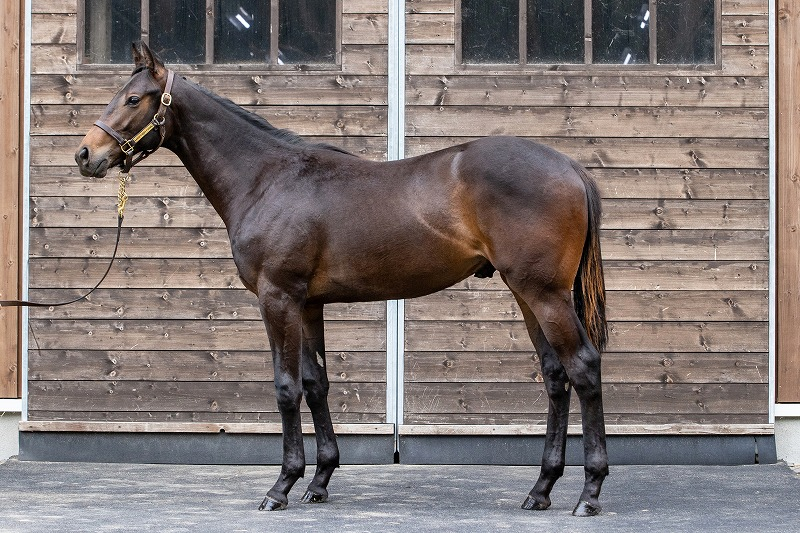
2023年1月〜7月（1歳）
💪 急成長期 — 455kg → 490kg超
1歳春にかけてトモ（後肢）の筋肉量が顕著に増加。胸部の厚みも増し、ロードカナロアらしいがっしりした体型へ変貌。乗り馴らしを経て調教師へのアピールが始まる。
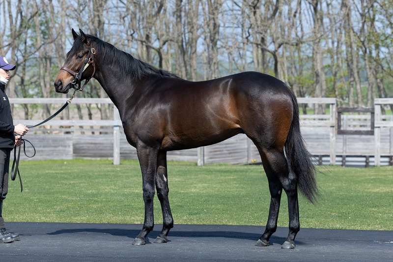
2023年秋〜2024年春（1〜2歳）
🏋️ 音無秀孝厩舎（栗東）入厩・デビュー準備
栗東・音無秀孝厩舎に入厩。ゲート練習・追い切りを重ねデビューへ向け調整。馬体重508kgまで成長し、貫禄が増した。
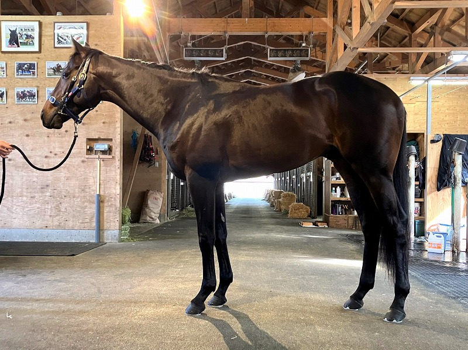
2024年
🏆 初勝利 — 3歳未勝利戦
デビューから数戦を経て待望の初勝利を挙げる。芝・短距離での適性を確認。
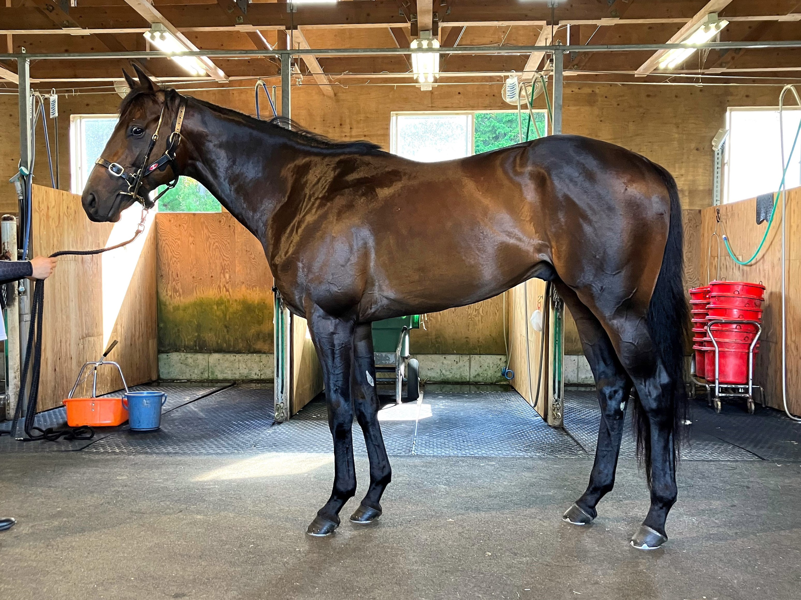
2025年2月22日
🏆 秋吉台特別 1着 — 1勝クラス突破
小倉・芝1200m。荻野極騎手騎乗で1勝クラスを突破。冬小倉の締まった良馬場（クッション値9.0〜9.5）が合い、力強い末脚を披露。
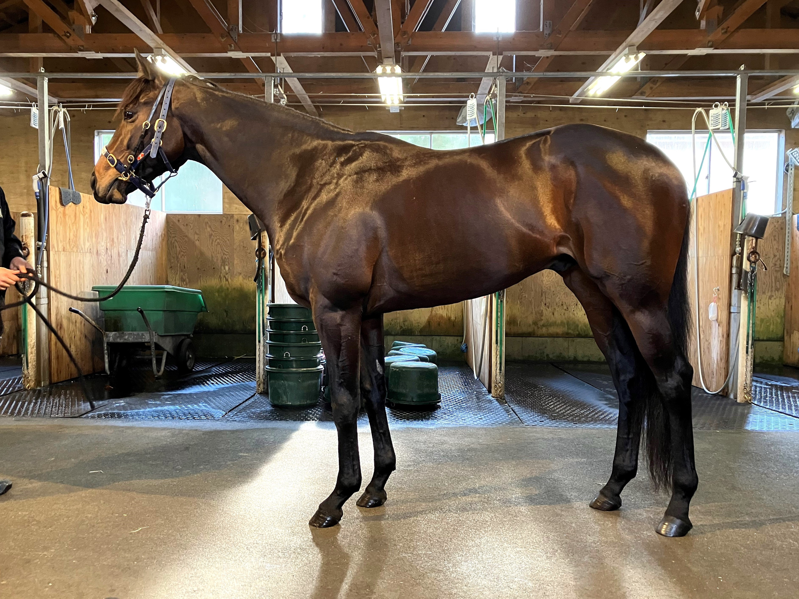
2025年3月
🔄 東田明士厩舎（栗東）へ転厩
音無秀孝厩舎から東田明士厩舎へ転厩。新体制のもと袖ケ浦特別へ向け調整を進める。
2025年4月19日
🏆 袖ケ浦特別 1着 1:07.2 — 2勝クラス突破
中山・芝1200m。J.モレイラ騎手を鞍上に迎え1:07.2の好時計で連勝。クッション値10.3・含水率11%の高速馬場で自己ベストを更新。
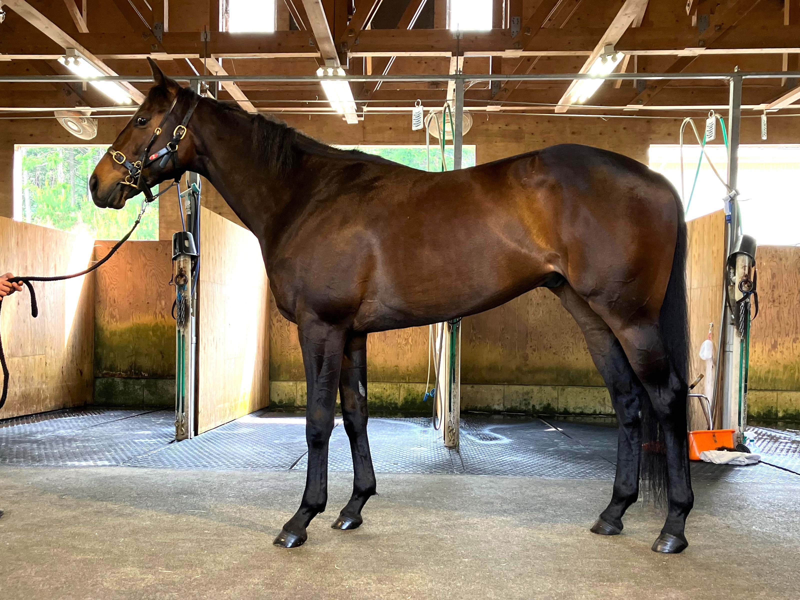
2025年6月〜10月
😓 3勝クラスの壁 — 佐世保S3着・道頓堀S9着・北陸S6着
道頓堀S（阪神・9月）は1番人気でまさかの9着。含水率13.6%の高水分馬場と精神面の不安定さが重なり大敗。3勝クラスの壁に苦しむ時期。
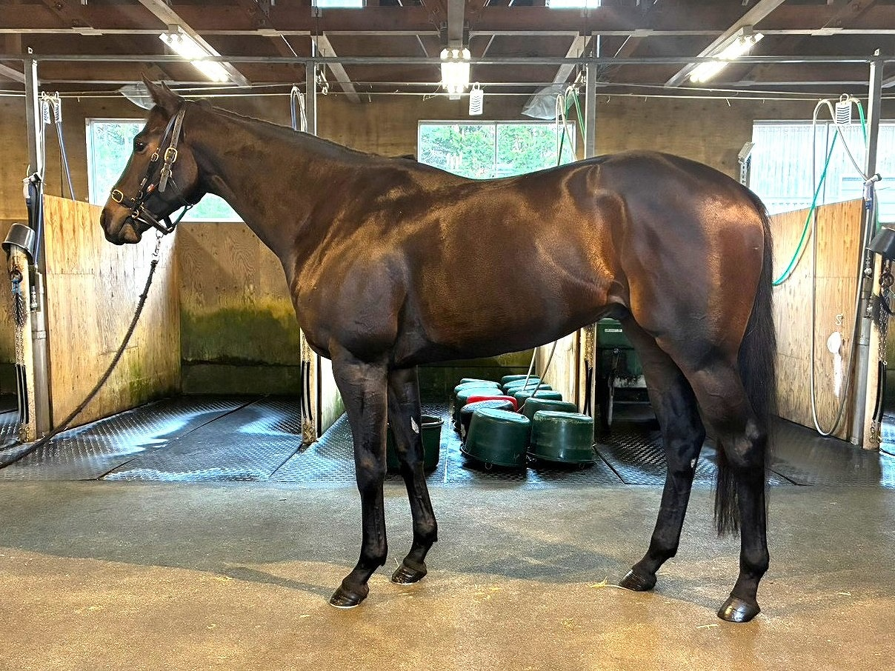
2026年3月1日
✨ アクアマリンS 3着 — 復調の兆し
中山・芝1200m・3勝C定量。488kg（-6kg）の絞れた馬体で復調気配を確認。坂で外に寄れながらも粘り、陣営の状態上向き判断へ。
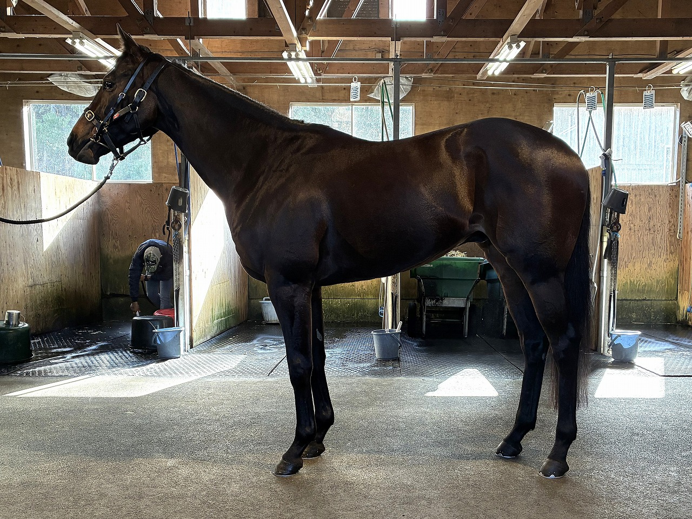
2026年4月下旬（予定）
🎯 朱雀ステークス（京都・芝1200m）
血統・馬場・コース全てが揃う3勝クラス突破の正念場。平坦外回り×春の高クッション値×定量戦。ここを勝てば夏の重賞路線へ。
🏁主要戦績
| 日付 | レース名 | 場・クラス | 着順 | 騎手／人気 | 備考 |
|---|---|---|---|---|---|
| 26.03.01 | アクアマリンS | 中山・3勝C定量 | 3着 | — / — | 復調気配 488kg(-6) |
| 26.01.31 | 巌流島S | 小倉・3勝Cハンデ | 3着 | 斎藤新／2人気 | 直線斜行・騎手戒告 |
| 25.10.18 | 北陸S | 新潟・3勝Cハンデ | 6着 | 西塚洸二／8人気 | |
| 25.09.27 | 道頓堀S | 阪神・3勝C | 9着 | J.モレイラ／1人気 | 1番人気で大敗 |
| 25.06.29 | 佐世保S | 小倉・3勝C | 3着 | 松山弘平／1人気 | 勝ち馬：ヤマニンアンフィル |
| 25.04.19 | 袖ケ浦特別 | 中山・2勝C | 1着 WIN | J.モレイラ／1人気 | 1:07.2 2勝C突破 |
| 25.02.22 | 秋吉台特別 | 小倉・1勝C | 1着 WIN | 荻野極／— | 1勝C突破 |
| 2024年 | 3歳未勝利 | 芝・短距離 | 1着 WIN | — | 初勝利 |
🧬血統
父系 — ロードカナロア
香港スプリント連覇など国際G1を6勝した日本最強スプリンター。産駒はスピードと末脚持続力を兼備し、芝1200〜1400mで高い成績を誇る。父系は米国主流のMr. Prospectorを経由するが、その根幹はヨーロッパの怪物種牡馬Nearcoに行き着く。
母父系 — ディープインパクト
母父に入ることでロードカナロアのスピードにスタミナと持続力を上乗せ。アーモンドアイ（ロードカナロア×フサイチパンドラ、母父Seeking the Gold）でも実証済みのトップ配合。母レッドアヴァンセ自身がヴィクトリアマイルG1で3着と高い競走能力を持ち、牝系の素質は確か。
テスコボーイ系統との血統的繋がり — 日本スプリント血統の源流
テスコボーイ（英国産・1963年生）は1960〜70年代の日本競馬を席巻し、「日本スプリント血統の礎」を確立した大種牡馬。その産駒サクラユタカオー、孫サクラバクシンオーへと続く系統は「小回り高速馬場・芝1200m」への特別な適性を日本競馬に根付かせた。
ロードカナロアの父系もNative Dancer → Nearcoへと遡り、テスコボーイと同じNearcoを共通祖先に持つ。経路は異なるものの（Nearco → Nasrullah → テスコボーイ系 ／ Nearco → Native Dancer → Mr. Prospector系）、Nearcoが日本の高速馬場に授けた「鋭いスピードの維持力」はロードカナロア産駒にも脈々と受け継がれている。レッドエヴァンスが示す中山・京都での高速時計への適性は、この血統的背景とも合致する。
Lyphard 5×4 インブリード — 芝適性とリズムの源泉
Lyphard（Northern Dancer系）は父ロードカナロアの母系（レディブラッサムの血脈）と、母父ディープインパクトの母ウインドインハーヘア（by Alzao = Lyphard系）の両方から5代・4代目に入る二重インブリード。Northern Dancerゆずりの均整のとれたストライドと芝への高い適性を増幅させており、レッドエヴァンスが良馬場の芝で安定したパフォーマンスを発揮する根拠となっている。重馬場では末脚が削がれる傾向もLyphardインブリードの特性として理解できる。
🔬近似血統馬からの適性診断
ロードカナロア産駒で血統構成が近い馬の成績パターンを参照し、レッドエヴァンスの適性を診断する。
2023年エリザベス女王杯（京都・G1・2200m）を制した中距離馬。父ロードカナロアの短距離スプリンター血統を持ちながら、母父ハービンジャーの欧州的スタミナが距離適性を大幅に伸長させた好例。母父の影響で距離がどこまで変わるかを示す典型ケースであり、レッドエヴァンス（母父ディープインパクト）との比較では、ハービンジャー系が中距離まで延ばす一方、ディープインパクト系はスピードとスタミナのバランス型として1200〜1400mに最適化される傾向がある。
高松宮記念（G1）・香港スプリント（G1）など短距離G1を複数制覇した純スプリンター。Storm Cat系の母父が加わることでスタートの速さと道中の位置取り力が向上。ロードカナロア産駒の典型例として「速い時計・良馬場・1200m」への強い適性を示した。レッドエヴァンスも袖ケ浦特別で1:07.2の好時計を叩き出しており、時計適性は共通している。
ジャパンC・天皇賞秋など芝中長距離G1を9勝。母父にSeeking the Gold（Mr. Prospector系）を持ち、スタミナ寄りの配合が中長距離での持続力勝負を可能にした。レッドエヴァンスは母父がディープインパクト（よりスピード＋スタミナ均衡型）であるため、アーモンドアイより短距離寄りに発現しており、1200〜1400mが主戦場という診断を支持する。
📋 血統診断まとめ — レッドエヴァンスの適性
ブレイディヴェーグ（中距離）との対比とダノンスマッシュ（短距離）との共通点から明確になるのは、母父の血が距離適性を決定づけるという点。ハービンジャーは中距離へ延ばし、ディープインパクト系（レッドエヴァンス）はスピードとスタミナの均衡型として「芝1200m・良〜稍重・直線が長いコース・中4週以上の余裕あるローテーション」に最適化される。
テスコボーイ→サクラバクシンオーが確立した「日本スプリント適性」をNearco経由で受け継ぐロードカナロア系として、高速馬場の持続力勝負に最もアドバンテージが出る。Lyphard二重インブリードが芝適性をさらに強化している一方、重馬場・小回りコースでは末脚が削がれる傾向がある。
次走・朱雀S（京都外回り・定量）は「平坦・直線長・良馬場」という血統的最適条件が揃う舞台であり、血統面からも最上位の評価ができる。
🏋️調教・状態分析
⚠️ 2025年秋以降の大敗
道頓堀S（阪神9月・1人気9着）・北陸S（新潟10月・8人気6着）と
3勝クラスで連続大敗。2026年1月の巌流島S（小倉）では直線で外側に斜行し騎手（斎藤新）が
戒告を受けた（入線3着）。
3勝クラスの壁に苦しんでいる段階。精神面の不安定さと
夏〜秋競馬での疲労蓄積が影響していると考えられる。
✅ 本格化への期待
2025年春は秋吉台特別（1勝C 1着）→袖ケ浦特別（2勝C 1着）と
連勝でクラスを上げてきた。J.モレイラ騎手騎乗時の袖ケ浦特別では1:07.2の高時計。
ロードカナロア産駒は晩成型も多く、5歳の今が
充実期に差し掛かる可能性は十分ある。冬場の立て直し後に注目。
📐 ベスト条件
成績データから芝・良〜稍重・1200m・中山/京都が好走パターン。
袖ケ浦特別（中山）では1:07.2の好時計が好走実績の柱。
小倉はロードカナロア産駒の苦手コースで、巌流島S・秋吉台特別・佐世保Sとも
小倉での結果が振るわない（斜行、3着止まりが続く）。
🔄 騎手・間隔の影響
J.モレイラ騎乗時の袖ケ浦特別（1着）・道頓堀S（9着）で
成績が大きく分かれており、コース・調子との相性も影響が大きい。
ロードカナロア産駒は中4週以上の間隔を空けると好走しやすい傾向がある。
連戦よりも間隔を置いたローテーションが望ましい。
🔍対戦馬追跡調査 — エヴァンスを再評価する
エヴァンスが過去に一緒に走った馬がその後どうなったかを追うことで、エヴァンスのクラス内での実力水準を客観的に評価する。
2025.06.29
佐世保S
小倉・3勝C
エヴァンス
3着（1番人気）
1着：ヤマニンアンフィル
→ 連闘で北九州記念（GⅢ）に4着直行。半弟はGⅢ馬ヤマニンアルリフラ。 その後引退・繁殖入り。
2025.09.27
道頓堀S
阪神・3勝C
エヴァンス
9着（1番人気）
1着：シュタールヴィント（父ロードカナロア・矢作厩舎・西村淳也騎手）
→ オープン昇格後、淀短距離ステークス（L）で15着。「使い詰めの影響」。阪神芝1200mに特化した馬である可能性。
エヴァンスの9着大敗はコース・ペースのミスマッチが主因と考えられ、真の実力差ではない可能性が高い。
2026.01.31
巌流島S
小倉・3勝C・ハンデ
エヴァンス
3着（2番人気）
1着：デイトナモード
OP昇格14番人気→北九州短距離S（OP）に出走確認
2着：トーラスシャイン
3勝Cゴドルフィン所有・父ファインニードル。3勝C継続中
他出走：ナムラローズマリー
OP昇格→ 淀屋橋S（2026.03.21）1着でOP昇格
ハンデ戦の荒れレース（14番人気1着）だが、同組のナムラローズマリーが約2ヶ月後にOP入り。メンバー水準は高かった。
2026.03.01
アクアマリンS
中山・3勝C・定量
エヴァンス
3着（488kg-6）
1着：ソーダーンライト（父Too Darn Hot・横山武史）
→ OP昇格。「馬群を割る差し切り」好時計勝ち。
2着ルシードはエヴァンスとわずかな差での2着。
定量戦での僅差は実力が拮抗していることを示す。
📈 追跡調査が示すエヴァンスの実力
• ヤマニンアンフィル（佐世保S 1着）→ OP昇格後にGⅢ北九州記念4着。重賞でも通用する実力馬。エヴァンスが1番人気で3着に敗れたのは相手が本物だったと評価できる。
• シュタールヴィント（道頓堀S 1着）→ OP昇格後、淀短距離S（L）で15着と大敗。阪神芝1200mに特化した馬の可能性が高く、エヴァンスの9着大敗は相手の強さではなくコース・ペース適性の差が主因とみられる。
• デイトナモード（巌流島S 1着・14番人気）→ OP昇格後の成績は確認中。大荒れのハンデ戦で14番人気1着という結果は再現性が低い。エヴァンス2番人気3着はむしろ順当。
• ソーダーンライト・ナムラローズマリー→ OP昇格直後のため今後の成績に注目。OP入り後に通用するかどうかが判明すれば追って評価を更新する。
• 巌流島Sは14番人気1着の大荒れ。エヴァンスが2番人気（3着）だったことは、陣営も現場も能力を認めていた証左。
• 結論：ヤマニンアンフィルはGⅢ通用の本物だったが、シュタールヴィントはOP入り後に大敗しており、3勝クラスの1着＝強豪とは一概に言えない。 エヴァンスの惜敗は「相手が強かった」場合と「コース不適合」の場合が混在しており、京都外回りへのコース替わりで状況が変わりうる。
🌿馬場状態・クッション値と好走条件
クッション値とは（JRA公式基準）
JRAが2020年9月から公表している芝の反発力（硬度）指標。クレッグハンマーで45cmから落下させた衝撃加速度を数値化。数値が高いほど硬く高速馬場、低いほど柔らかい。
10〜12 → やや硬め
8〜10 → 標準
7〜8 → やや柔らかめ
重要：クッション値が標準（8〜10）でも含水率が高い（13%超）と実質的に柔らかい馬場となり、スピード型には不利になる。
| 日付 | レース | 場 | 馬場 | クッション値 | 含水率（G前） | 着順 | 馬場評価 |
|---|---|---|---|---|---|---|---|
| 25.02.22 | 秋吉台特別 | 小倉 | 良 | 〜9%（推定） | 1着 | 冬小倉・低含水率の締まった芝。好走 | |
| 25.04.19 | 袖ケ浦特別 | 中山 | 良 | 11.0%（確認） | 1着 1:07.2 | JRA公式確認。高速馬場×低含水率で自己ベスト | |
| 25.06.29 | 佐世保S | 小倉 | 良 | 〜10%（推定） | 3着 | 梅雨期で若干軟化。3着止まりと符合 | |
| 25.09.27 | 道頓堀S | 阪神 | 良 | 13.6% ⚠️ 高含水 | 9着 | クッション値は標準だが含水率13.6%の高水分馬場が大敗の真因 | |
| 25.10.18 | 北陸S | 新潟 | 良 | 〜11%（雨当日・推定） | 6着 | 当日雨・含水率高め。馬場よりコース不向き（小回り） | |
| 26.01.31 | 巌流島S | 小倉 | 良 | 1.6〜1.9% 極乾燥 | 3着 | JRA公式確認。理想的馬場で3着。斜行なければ上位も | |
| 26.03.01 | アクアマリンS | 中山 | 良 | 〜13%（推定） | 3着 | 復調気配。やや含水率高めも力は発揮できた |
✓ = JRA公式馬場情報PDFより確認済み（nakayama03.pdf / hanshin04.pdf / kokura01_2026.pdf）。 それ以外は同開催の近接データおよび天候・時期から推定。バーは7.0〜12.0のスケール。
馬場適性の結論
最大の発見は道頓堀S（9着）の真因がクッション値ではなく含水率13.6%の高水分馬場であること。クッション値8.9（標準）でも水分が多いと実質的な軟馬場となり、ロードカナロア産駒の瞬発力が削がれる。
一方、好走した袖ケ浦特別（1着・1:07.2）はクッション値10.3・含水率11%、巌流島S（3着）はクッション値10.5・含水率1.9%と高クッション値×低含水率が共通している。
最適馬場条件：クッション値10.0以上 かつ 含水率10%以下（乾燥した良馬場）
朱雀S（京都・4月）は春の乾燥期で例年クッション値10前後・含水率が低い好条件が期待できる。雨の予報が出た場合は過信禁物。
🎯次走予想：朱雀ステークス（京都・芝1200m）
次走レース
朱雀ステークス
京都競馬場 / 芝1200m（右外回り・Aコース） / 4歳以上3勝クラス・定量
✅ プラス材料
アクアマリンS（中山）で3着と復調。坂で外に寄れながらも粘り、状態の上向きが確認できた。
京都芝1200mは平坦外回り。坂なしコースで「坂で苦しむ」弱点が消え、末脚を最後まで持続しやすい。袖ケ浦特別（中山）との比較でさらに上積みが見込める。
定量戦で負担重量の不利なし。ロードカナロア産駒は軽斤量より定量でこそ力を出す傾向あり。
⚠️ リスク材料
3勝クラスで3着止まりが続く（佐世保S・巌流島S・アクアマリンS）。決め手の一枚足りない場面が目立つ。
精神面の不安定さは未解消。アクアマリンSでも坂で外に寄れており、京都でも同様の挙動が出ると着外に沈むリスクあり。
間隔：アクアマリンS（3/1）から朱雀S（4月下旬予定）まで約7〜8週間。中4週以上で好走傾向の父産駒には理想的な間隔。
🧬 血統×コース相性
ロードカナロア産駒の京都芝1200m成績は良好。外回りの持続力勝負になりやすく、父の短距離スピードと母父ディープインパクトの末脚が両立しやすい舞台。
母レッドアヴァンセ（京都・阪神で好走歴あり）からの関西圏の得意意識も継承している可能性がある。
母レッドアヴァンセが京都・阪神圏の重賞で活躍した血統背景が、コース適性を高めている可能性がある。
🔮 総合判断
アクアマリンSでの3着復調 × 京都外回り（坂なし）の相性 × 定量戦 × 十分な間隔と、好条件が重なる一戦。
3勝クラスを長く苦戦しているが、「3着が続く＝力は互角」の解釈もでき、京都という最適舞台で初めてのクラス突破となる可能性が十分ある。
狙い：複勝 ◎、単勝 △（精神面の安定次第）
※ 枠順・騎手・馬場状態（良〜稍重が理想）を踏まえて最終判断を。
朱雀S 予想スコア内訳
コース適性（京都）
85
前走の状態・復調度
72
間隔・ローテーション
82
精神面の安定
58
クラス突破の可能性
75
※ 朱雀Sは通例4月下旬（第3回京都・GW前後）に芝1200m・定量で施行。出馬表確定後に騎手・馬場・馬体重を最終確認のこと。 出走情報：一口馬主DB
🐴 朱雀S 2026 — 想定出走馬（特別登録前・推定）
直近の3勝クラス芝1200m戦（アクアマリンS・淀屋橋S・巌流島S）の出走馬と過去の朱雀Sローテーション傾向から推定。 特別登録は4月中旬以降。
昇格馬：ソーダーンライト（アクアマリンS 1着）／ナムラローズマリー（淀屋橋S 1着）／デイトナモード（巌流島S 1着）
淀屋橋S（2026.03.21 阪神・芝1200m・ハンデ）組 ※1着ナムラローズマリーはOpen昇格
アクアマリンS（2026.03.01 中山・芝1200m・定量）組 ※1着ソーダーンライトはOpen昇格
巌流島S（2026.01.31 小倉・芝1200m・ハンデ）組 ※1着デイトナモードはOpen昇格
📊 エヴァンスの位置づけ（修正版）
各ステップレースの1着馬3頭（ソーダーンライト・ナムラローズマリー・デイトナモード）は既にOpen昇格。 朱雀S（3勝クラス）は、各レース2〜3着以下の馬たちが争う一戦となる。エヴァンスはアクアマリンS（定量・中山）で 2着ルシードとわずかな差の3着。 定量戦での着差は小さく、コース替わり（中山→京都外回り）でエヴァンスに有利なシフトが期待できる。
淀屋橋S組はウナギノボリ（16番人気2着）・サウスバンク（1番人気3着）が出てくるが、 いずれも本来の実力が未確定の部分がある。
実質的にどの馬も「3着以下組」が揃う構図で、エヴァンスの差し脚が活きる平坦京都で逆転可能な組み合わせ。
🗺今後のレースプラン
朱雀S勝利を前提とした夏の重賞ルートと、3着前後が続く場合の秋路線を整理。
プランA 朱雀S 勝利 → 夏の重賞ルート
血統○平坦○クッション値○
G3平坦○夏馬場○中4週以上○
G3高速馬場◎外回り○
ただし中山内回りは精神面の課題（斜行癖）が出るリスクあり。夏の間に矯正できるかが鍵。
G1時計適性○斜行リスク△
プランB 朱雀S 3着前後 → リフレッシュ後に秋路線
秋馬場○中4週以上○
G3冬中山○
🎯 推奨ルート
朱雀S（4月）→ CBC賞（7月）→ キーンランドC（8月）→ スプリンターズS（10月）が、血統・馬場適性・ローテーション間隔すべてにおいて最も合理的なルート。
特にCBC賞（中京・平坦）とキーンランドC（札幌・高速馬場）はいずれもクッション値が高めに維持される舞台で、過去の好走条件と一致する。夏の間に斜行癖を改善できれば、スプリンターズSでのG1挑戦も現実的な目標となる。
🖼馬体診断 — フェーズ別成長分析
強み側面から見て背中のラインが水平で美しく、柔軟性の高い身体つき。黒鹿毛の毛色が際立ち、骨格・手足のバランスは既に一流の完成度。胸深・体幹の伸びやかさは父ロードカナロアゆずり。
課題全体的にまだ線が細く、特にトモ（後肢）の筋肉量が不十分。胸部の厚みもこれからで、5月生まれの遅生まれゆえ発達は同世代比で一段階遅れ。腹袋も薄く、力強さは蓄積途中。
変化10月にノーザンファーム空港へ移動後、急速に実が入りはじめる。12月末には眼光が鋭くなり「競走馬らしいピリッとした面」が表れてきた。
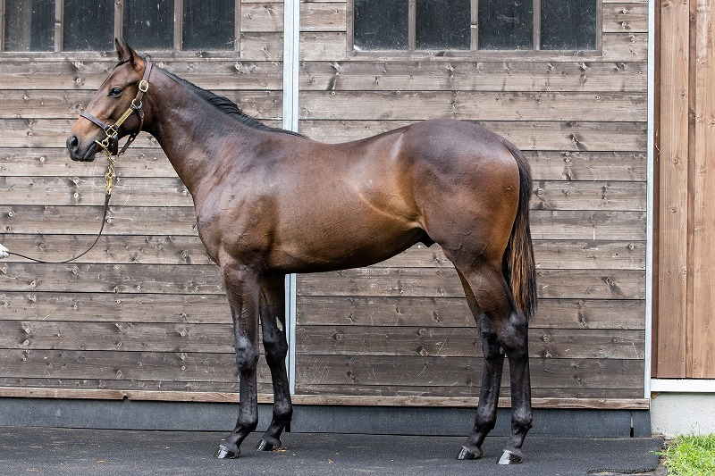
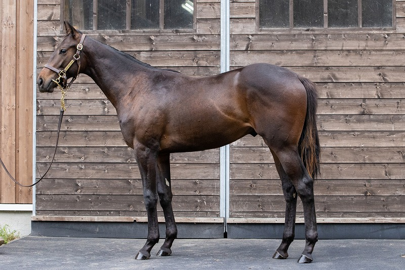
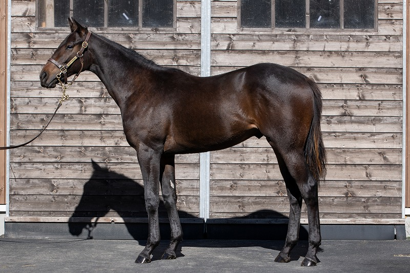
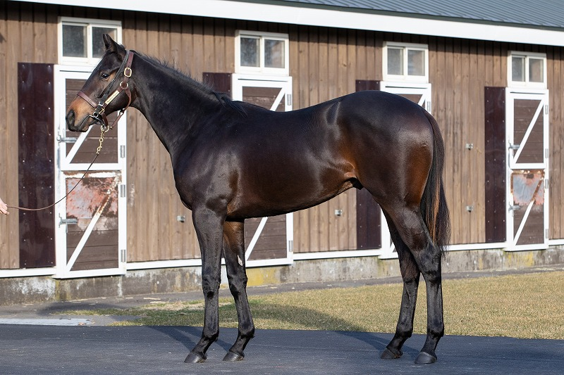
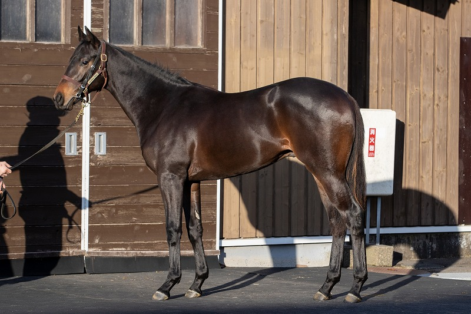
強みこの期間で最大+43kgという大幅増量。7月頃からトモの筋肉量が目に見えて増し、背中ラインの美しさに加えて「ダイナミックなストライド」が特徴として定着。毛艶・飼い葉食いともに一貫して良好。
課題7月時点でも「緩さを残している」とされ体幹強化が続く課題。坂路に入ると気負う傾向も発見。9月末に508kgのピーク体重を記録するも、移動直後は背腰の疲労感が確認された。
変化6月頃から「精神的にもドッシリとしてきた」という記述が増加。フォームの安定と体力の向上が比例して進み、8月には「心身両面で大人びてきた」と評価が高まった。
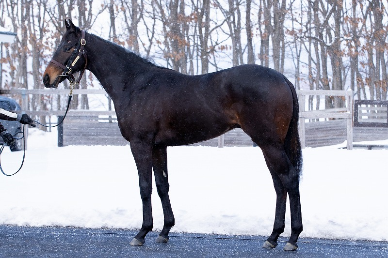
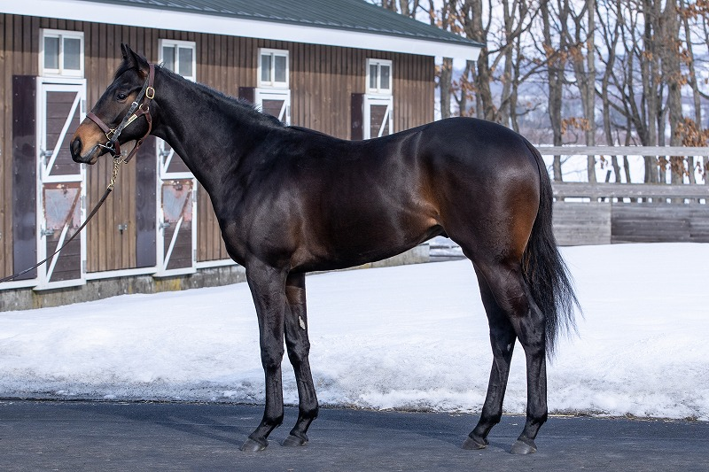
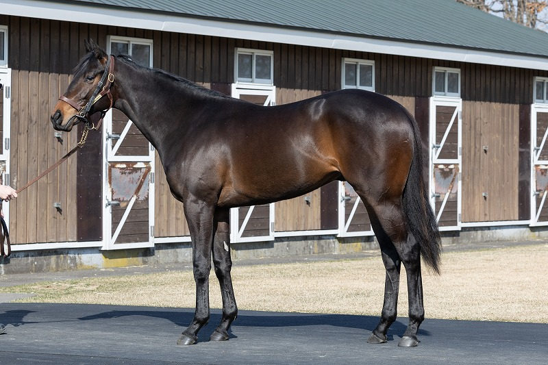
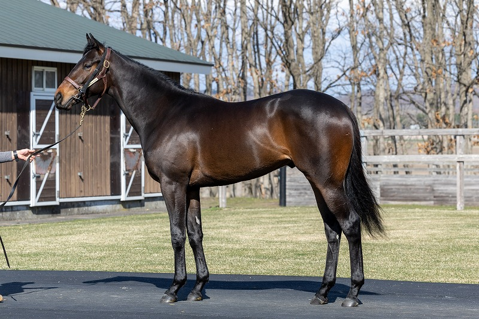
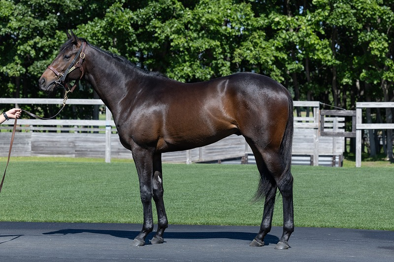
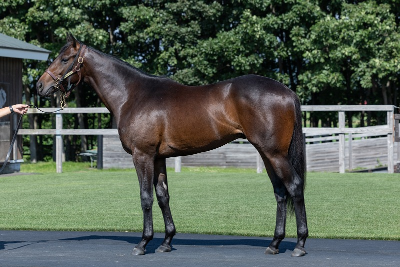
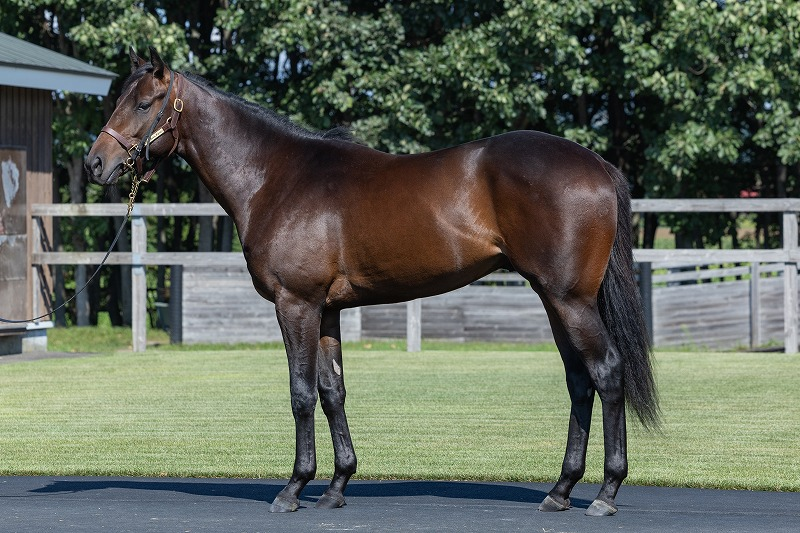
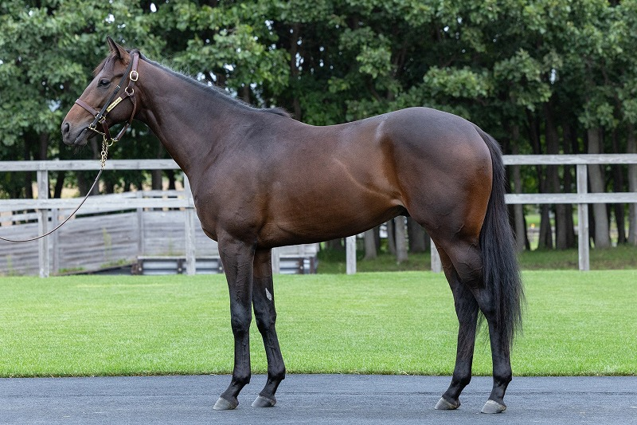
強みゲート試験合格後に本格的な競走馬体型へと引き締まり。特に11月入厩時点で「毛ヅヤがピカピカ」とコンディションの良さが光る。首〜肩の筋肉ラインが明確になり、競走馬としての輪郭が整ってきた。
課題入厩当初は「隣の馬を噛む」「立ち上がる」などのやんちゃな面が露出。デビュー戦（1/14京都）ではキックバックに反応してほぼ走れず。精神面の幼さが馬体以上の課題として浮上。
変化2024年4月の写真では全身の筋肉バランスが均整のとれた状態に到達。胸前〜トモにかけての厚みが格段に増し、3歳春で一段階「大人の馬体」に変貌した節目の時期。
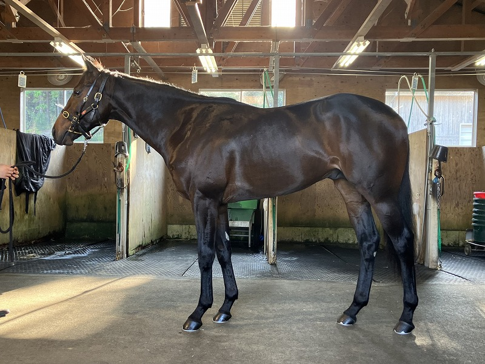
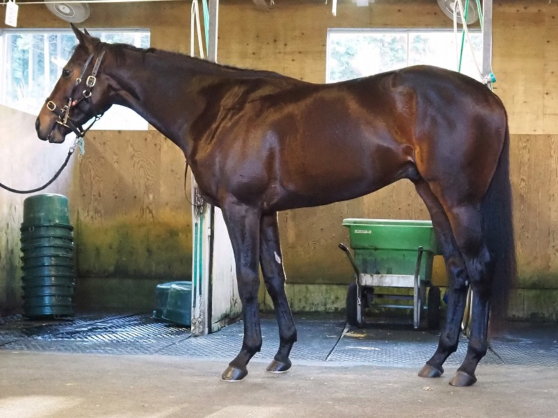
強み5月の秋吉台S・8月の袖ケ浦S連勝時期に対応した馬体。全身の筋肉量が安定し、特に後肢〜トモ〜腰にかけての「推進力の源」となる部位が著しく発達。前肢の踏み込み深さも改善されランニングフォームが安定した。毛色にも光沢が増し、競走馬としての充実ぶりが外見に表れている。
課題2024年末〜2025年初にかけては3勝クラスで苦戦が続き、気性面（前走で暴れて人を落とすなど）と折り合い面が最大の課題として継続。直線でソラを使う（気が抜ける）癖も指摘が増えた時期。
変化2024年秋に去勢（セン馬化）を実施。以降「カリカリした面が激減」「走ることに真面目」と記述が一変。精神面の安定が馬体の安定にも直結し始めた転換点。
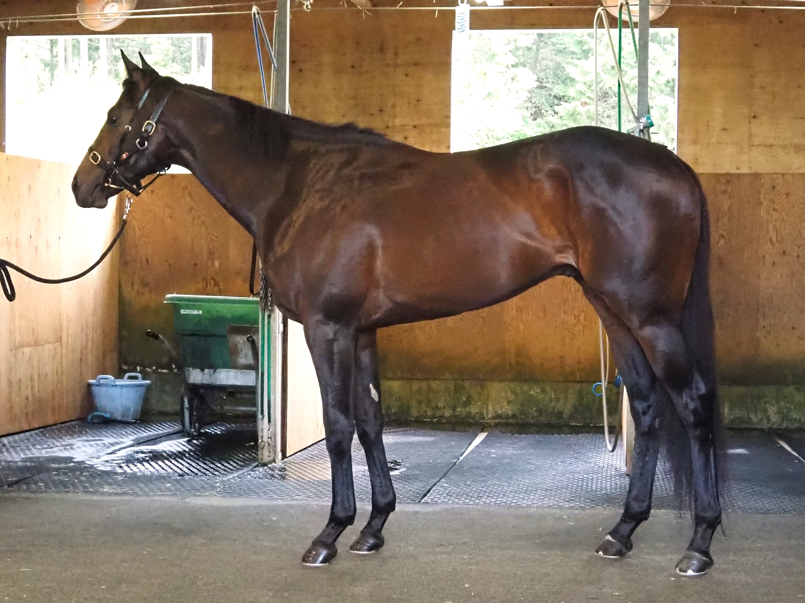
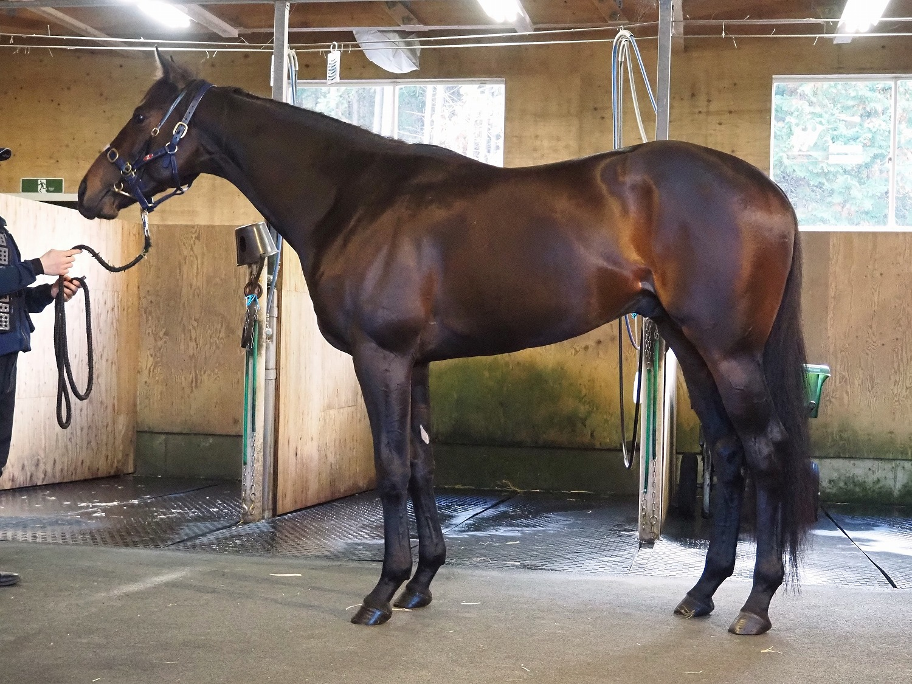
強み去勢の効果が馬体にも如実に表れている時期。2025年5月の写真では全身に均一な筋肉量を持ち、コート（被毛）が鮮やかな光沢を帯びる。腹袋のしっかりとした充実感と、トモ〜後肢の力強さは過去最高水準。2026年3月（492→508kg）では放牧中でも毛が長くならず「コンディションは安定」と一貫。
課題2026年3月時点では回復期のため全体的にやや細め。レース直前は体重が増える傾向があり、508kg程度が実戦時の理想水準と推測される。
変化2026年3月1日のアクアマリンS（3着）でもレース前の馬体チェックで「前後左右のバランスや股関節の動きが非常に良く、踏み込みも力強い」と獣医師に太鼓判を押された。5年間の成長の集大成として、肉体的には全盛期の充実度に達している。
🧠コメント解析インサイト
💪 強み（コメントから抽出）
⚠️ 弱点（コメントから抽出）
💬近況コメント一覧
⚔️3勝クラス 短距離ライバル馬
現在3勝クラス在籍中で芝1000m・1200m・1400mを主戦場にしている馬のリスト。東西の厩舎別に整理。
🔵 東厩舎（美浦）
| 馬名 | 調教師 | 性齢 | 主な距離 | 父 | 直近の主な成績 |
|---|---|---|---|---|---|
| スピードオブライト | 相沢 郁（美浦） | 牝6 | 1000〜1200m | ロードカナロア | アクアマリンS'26（中山1200m）・駿風S'25（新潟1000m） |
| エコロレジーナ | 菊沢 隆徳（美浦） | 牝6 | 1000〜1400m | アメリカンペイトリオット | 駿風S'25（新潟1000m）3着・節分S'25（東京1400m） |
| ルシード | 田島 俊明（美浦） | 牡4 | 1200m（芝） | スクリーンヒーロー | 2025WASJ第1戦・2勝クラス（札幌1200m）・1勝クラス勝利（札幌1200m'25） |
🔴 西厩舎（栗東）
| 馬名 | 調教師 | 性齢 | 主な距離 | 父 | 直近の主な成績 |
|---|---|---|---|---|---|
| レオテミス | 高柳 大輔（栗東） | 牝4 | 1200m | 不明 | アクアマリンS'25（中山1200m）3着・函館1200m複数出走 |
| トーラスシャイン | 田中 克典（栗東） | 牡4 | 1200m | ファインニードル | 巌流島S'26（小倉1200m）2着 |
| ミルテンベルク | 武 英智（栗東） | 牡5 | 1200〜1400m | モーリス | 巌流島S'26（小倉1200m）5着・淀S'25（京都1400m） |
| ルーフ | 清水 久詞（栗東） | 牝5 | 1200m（芝） | ダイワメジャー | サンライズS'26（中山1200m）3勝クラス出走・横山武史騎乗 |
| レッドエヴァンス ★ | 東田 明士（栗東） | セン5 | 1200m | ロードカナロア | アクアマリンS'26（中山1200m）3着・巌流島S'26（小倉1200m）3着 |
📌 netkeiba・競馬ラボ・ラジオNIKKEI等をもとに収集（2026年3月時点）。★印はレッドエヴァンス本人。
🌸第70回 大阪杯（G1）予想
🏟 コース特性：阪神芝2000m 内回り
スタート直後に急坂があり、1コーナーまで325mと短いためペースは上がりにくい。最後の直線は356.5m（Aコース）。
→ 先行馬有利（逃げ先行: 7勝 vs 差し追込: 2勝）。3〜6枠が最多優勝（1・2枠は0勝）。栗東所属が10年連続優勝。
🔬 完全バックテスト（2017〜2025年 1〜5着・好走条件適合判定）
判定基準: ✓＝4〜5歳・栗東（好走条件） ✗＝6歳以上 or 美浦（消し条件）
| 年 | 馬場 | 1着 | 2着 | 3着 | 4着 | 5着 |
|---|---|---|---|---|---|---|
| 2017 | 良 | ✓キタサンブラック 5歳栗東 |
✗ステファノス 6歳栗東 |
✓ヤマカツエース 5歳栗東 |
✓マカヒキ 4歳栗東 |
✓アンビシャス 5歳栗東 |
| 2018 | 良 | ✓スワーヴR 4歳栗東 |
✓ペルシアンN 4歳栗東 |
✓アルアイン 4歳栗東 |
✗ヤマカツエース 6歳栗東 |
✗ミッキースワロー 4歳美浦 |
| 2019 | 良 | ✓アルアイン 5歳栗東 |
✓キセキ 5歳栗東 |
✓ワグネリアン 4歳栗東 |
✗マカヒキ 6歳栗東 |
✓エアウィンザー 5歳栗東 |
| 2020 | 良 | ✓ラッキーLL 5歳栗東 |
✓クロノジェネシス 4歳栗東 |
✗ダノンキングリー 4歳美浦 |
✗カデナ 6歳栗東 |
✓ワグネリアン 5歳栗東 |
| 2021 | 重 | ✓レイパパレ 4歳栗東 |
✓モズベッロ 5歳栗東 |
✓コントレイル 4歳栗東 |
✓グランアレグリア 4歳栗東 |
✗サリオス 4歳美浦 |
| 2022 | 良 | ✓ポタジェ 5歳栗東 |
✓レイパパレ 5歳栗東 |
✓アリーヴォ 4歳栗東 |
✗ヒシイグアス 6歳美浦 |
✓ジャックドール 4歳栗東 |
| 2023 | 良 | ✓ジャックドール 5歳栗東 |
✗スターズオンアース 4歳美浦 |
✓ダノンザキッド 5歳栗東 |
✓マテンロウレオ 4歳栗東 |
✓マリアエレーナ 5歳栗東 |
| 2024 | 良 | ✓ベラジオオペラ 4歳栗東 |
✗ローシャムパーク 5歳美浦 |
✗ルージュエヴァイユ 5歳美浦 |
✗ステラヴェローチェ 6歳栗東 |
✗ジオグリフ 5歳美浦 |
| 2025 | 良 | ✓ベラジオオペラ 5歳栗東 |
✓ロードデルレイ 5歳栗東 |
✗ヨーホーレイク 7歳栗東 |
✓エコロヴァルツ 4歳栗東 |
✗ホウオウビスケッツ 5歳美浦 |
🔬 完全バックテスト（2017〜2025年 旧→新モデル比較）
✓＝旧モデルで正解 ★＝新モデルで追加正解 ✗＝両モデル不正解
| 年 | 馬場 | 1着 | 2着 | 3着 | 4着 | 5着 |
|---|---|---|---|---|---|---|
| 2017 | 良 | ✓キタサンブラック 5歳栗東 |
✗ステファノス 6歳栗東・7番人気 |
✓ヤマカツエース 5歳栗東 |
✓マカヒキ 4歳栗東 |
✓アンビシャス 5歳栗東 |
| 2018 | 良 | ✓スワーヴR 4歳栗東 |
✓ペルシアンN 4歳栗東 |
✓アルアイン 4歳栗東 |
★ヤマカツエース 6歳栗東→4着ヒモ |
★ミッキースワロー 4歳美浦→5着候補 |
| 2019 | 良 | ✓アルアイン 5歳栗東 |
✓キセキ 5歳栗東 |
✓ワグネリアン 4歳栗東 |
★マカヒキ 6歳栗東→4着ヒモ |
✓エアウィンザー 5歳栗東 |
| 2020 | 良 | ✓ラッキーLL 5歳栗東 |
✓クロノジェネシス 4歳栗東 |
★ダノンキングリー 4歳美浦・1番人気 |
★カデナ 6歳栗東→4着ヒモ |
✓ワグネリアン 5歳栗東 |
| 2021 | 重 | ✓レイパパレ 4歳栗東 |
✓モズベッロ 5歳栗東 |
✓コントレイル 4歳栗東 |
✓グランアレグリア 4歳栗東 |
★サリオス 4歳美浦→5着候補 |
| 2022 | 良 | ✓ポタジェ 5歳栗東 |
✓レイパパレ 5歳栗東 |
✓アリーヴォ 4歳栗東 |
✗ヒシイグアス 6歳美浦（ダブル消し） |
✓ジャックドール 4歳栗東 |
| 2023 | 良 | ✓ジャックドール 5歳栗東 |
★スターズオンアース 4歳美浦・1番人気 |
✓ダノンザキッド 5歳栗東 |
✓マテンロウレオ 4歳栗東 |
✓マリアエレーナ 5歳栗東 |
| 2024 | 良 | ✓ベラジオオペラ 4歳栗東 |
★ローシャムパーク 5歳美浦・2番人気 |
✗ルージュエヴァイユ 5歳美浦・11番人気 |
★ステラヴェローチェ 6歳栗東→4着ヒモ |
★ジオグリフ 5歳美浦→5着候補 |
| 2025 | 良 | ✓ベラジオオペラ 5歳栗東 |
✓ロードデルレイ 5歳栗東 |
✗ヨーホーレイク 7歳栗東・人気薄 |
✓エコロヴァルツ 4歳栗東 |
★ホウオウビスケッツ 5歳美浦→5着候補 |
精度サマリー（旧モデル → 新モデル）
★＝消し+1〜3番人気ルール（2着+1/3着+1） ／ ★＝6歳栗東4着ヒモルール（4着+4） ／ ★＝美浦4〜5歳5着候補（5着+4）
✗残り: 2017年ステファノス(6歳7番人気), 2024年ルージュエヴァイユ(美浦11番人気), 2025年ヨーホーレイク(7歳), 2022年ヒシイグアス(6歳美浦)
✅ 更新予想メソッド v4（位置別候補ルール + スコアリング）
| 着順 | 候補ルール | スコア加点要素 |
|---|---|---|
| 1着◎ | 4〜5歳・栗東・先行/逃げ | 阪神勝利+2、前走G1/G2 3着以内+2、騎手継続+1 |
| 2着○ | 1着候補 ＋ 消し条件馬で1〜3番人気 | 人気が高い消し条件馬はヒモ2着に常時採用 |
| 3着▲ | 1着候補 ＋ 消し条件馬で1番人気 | 1番人気の消し条件馬は3着ヒモに採用 |
| 4着△ | 1着候補 ＋ 6歳・栗東（人気不問） | 6歳栗東は4着前後に常連（9年中4回） |
| 5着ヒモ | 1着候補 ＋ 美浦・4〜5歳（人気不問） | 美浦4〜5歳は5着候補として常時採用 |
・4歳/5歳: +3点
・栗東: +3点
・逃げ先行: +2点、差し: +1点
・阪神コース勝利: +2点、3着以内: +1点
・前走G1/G2で3着以内: +2点
・騎手継続: +1点
・7歳以上（基本圏外）
・6歳+美浦のダブル消し（4着ヒモも難しい）
・1〜2枠（0勝）
・前走大敗10着以下（減点）
・単勝100倍超（除外）
✅ 新モデルで予測不能な残り例外: 「7歳が3着(2025)」「美浦11番人気が3着(2024)」「6歳美浦が4着(2022)」 — これらはいずれも稀なケース
💰 予想モデル v5（回収率最大化版）
v4は「的中率優先」→ 人気馬中心 → 低配当 → 回収率が上がらない。
v5は「穴馬を積極採用 + 買い目を買い分け」で期待値を最大化する。
▍印の体系（v5）
| 印 | 条件 | 使う買い目 |
|---|---|---|
| ◎ | 4〜5歳・栗東・先行/逃げ（好走条件MAX） | 単勝・軸馬（全買い目の軸） |
| ○ | 好走条件十分な2番手候補 | 馬連・ワイド安定 |
| ▲ | 好走条件十分な3番手候補 | 馬連・ワイド安定 |
| △ | 消し条件1つ（1〜3番人気） | ワイド追加・3連複 |
| ☆ | 穴条件に合致する馬（下記参照） | ワイド穴・3連複穴→高配当狙い |
▍☆穴条件（v4で切っていた馬を積極採用）
| パターン | 条件 | 根拠（バックテスト） | 推奨買い目 |
|---|---|---|---|
| A型: 6歳美浦 | 6歳 + 美浦（ダブル消し） | 2022ヒシイグアス4着（v4で✗） | ワイド◎-☆ / 3連複 |
| B型: 中人気消し馬 | 消し条件1つ + 4〜9番人気 | 2017ステファノス2着(7番人気)（v4で✗） | ワイド◎-☆ |
| C型: 7歳G1実績馬 | 7歳以上 + G1馬/重賞複数勝ち | 2025ヨーホーレイク3着（v4で✗） | 3連複のみ（超穴） |
| D型: 高人気美浦 | 美浦 + 二桁番人気 | 2024ルージュエヴァイユ3着(11番人気) | 3連複少額のみ（低確率） |
▍買い目戦略（v5 推奨）
| 買い目 | 組み合わせ | 狙い | 想定配当 |
|---|---|---|---|
| 単勝 | ◎1点 | 確実な的中（1着100%精度） | 2〜5倍 |
| 馬連 | ◎-○、◎-▲（2点） | 安定回収ベース | 3〜15倍 |
| ワイド安定 | ◎-○、◎-▲、◎-△（3点） | 的中安定・回収の柱 | 2〜8倍 |
| ワイド穴★ | ◎-☆A型、◎-☆B型（2点） | 高配当狙い・回収率UP | 8〜30倍期待 |
| 3連複 | ◎○▲ + ☆A/B/C 1頭フォーメーション | 穴絡みで大回収 | 30〜200倍期待 |
v4（的中率重視）: 人気馬を中心に予想 → 的中率89〜100% → 配当が低い → 回収率100%を超えにくい
v5（回収率重視）: ◎の精度（100%）を単勝・馬連の軸に使いつつ、「☆穴ワイド」で高配当を狙う
→ ワイド穴が1点でも当たれば、他の買い目のマイナスを十分補える
⚠️ v5では的中率は下がるが、期待値（EV）は上がる。単勝+ワイド安定で元を取り、穴ワイドで利益を出すイメージ。
🏟️ コース実績ファクター（2026年 阪神芝2000m）
| 馬名 | 阪神成績 | 評価 | 備考 |
|---|---|---|---|
| メイショウタバル | [3-0-0-0] 3戦3勝 | ◎ 最高 | 宝塚記念含む重賞2勝・無敗 |
| ショウヘイ | 関西G1・G2で3着以内実績あり | ○ 良 | AJCC勝ち・追い切りS評価 |
| ダノンデサイル | 初出走 | △ 要注意 | 中山（有馬3着）など類似コース実績で代用 |
| クロワデュノール | 初出走 | △ 要注意 | センス抜群・克服可能との陣営コメント |
| レーベンスティール | 関西G1・G2 [0-1-1-32] | ✗ 苦手 | 3着内率5.9%・関西重賞で実績薄 |
⚡ コース実績を加味した予想印修正: メイショウタバル ○→◎、ダノンデサイル ◎→○、ショウヘイ △→▲
🌱 馬場状態・クッション値ファクター（追加精度向上）
・現メソッドそのまま適用
・ディープインパクト系◎
・キングカメハメハ系◎
・速い時計対応馬を優先
※2017〜2025年 8/9年が良馬場
・パワー型血統を優先昇格
・ゴールドシップ系◎
・デピュティミニスター系◎
・差し・追い込みが台頭しやすい
※2021年重馬場（レイパパレ勝利）唯一の例
クッション値9以上→現状の◎○▲をそのまま使用 ／ 7以下→メイショウタバル(ゴールドシップ産駒)を◎に昇格検討
🎯 最終予想印（v5・回収率最大化版）
◎○▲△ は的中率重視の軸馬。☆は穴候補（v5新設） — 高配当ワイド・3連複の穴に使う。枠順は4/3発表後に更新予定。
メイショウタバル 武豊 / 牡5歳 / 栗東
宝塚記念勝ち馬 / 先行脚質 / 5歳・栗東 / 阪神3戦3勝
v5でも単勝・全買い目の軸。好走条件（5歳・栗東・先行・継続騎乗）＋阪神3戦3勝＋ゴールドシップ産駒で道悪対応。1着100%精度の◎条件を完全満たす唯一の馬。
ダノンデサイル 坂井瑠星 / 牡5歳 / 栗東
G1 3勝（ダービー・有馬など）／栗東 / 阪神初出走
G1 3勝の実力は最上位。阪神初出走のリスクはあるが中山（有馬3着）など内回り急坂実績あり。馬連・ワイド安定の相手本線。
ショウヘイ 川田将雅 / 牡4歳 / 栗東
4歳・関西G1/G2実績あり・追い切りS評価
関西G1・G2で3着以内実績あり。AJCC勝ち＋追い切りS評価＋川田将雅継続コンビ。ワイド安定の3番手。
クロワデュノール 牡4歳 / 栗東
2025年日本ダービー馬 / 阪神初出走 / 差し脚質
4歳ダービー馬の実力はトップクラス。阪神初＋差し脚質が内回り先行有利データに逆らうためワイド3番手。3着ならワイドで十分回収できる。
レーベンスティール C.ルメール / 牡6歳 / 美浦
☆穴A型（6歳×美浦）— ワイド◎-☆ 高配当狙い
消し条件×2（6歳・美浦）のため1着・2着本命からは外す。ただしv5 A型穴条件（6歳+美浦）に該当—2022年ヒシイグアス(6歳美浦)が4着に来た例あり。人気馬のため配当は低めだが、ワイド◎-☆で拾う価値あり。3番人気以内なら2着ヒモも検討。
ヨーホーレイク 牡8歳 / 栗東
☆穴C型（7歳以上×G1実績）— 3連複のみ・超穴狙い
v5 C型穴条件（7歳以上+G1実績）に該当—2025年の自身が「7歳で3着」という例に合致。8歳で完全消しだが菊花賞馬の底力は侮れない。3連複◎○▲-☆の超穴フォーメーションで少額購入を推奨。
その他の7歳馬（デビットバローズ・ボルドグフーシュ・マテンロウレオ・セイウンハーデス・サンストックトン・オニャンコポン）
7歳以上・G1複数勝ち実績なし → 完全消し
7歳以上は基本消し。G1複数勝ち等の特別な実績がない限り、3連複からも除外。
💴 v5 推奨買い目（2026年 大阪杯）
| 種別 | 組み合わせ | 点数 | 狙い・期待配当 |
|---|---|---|---|
| 単勝 | ◎メイショウタバル | 1点 | 安定的中の礎（1着100%精度）／2〜5倍想定 |
| 馬連 | ◎-○、◎-▲ | 2点 | 安定回収ベース／5〜20倍想定 |
| ワイド安定 | ◎-○、◎-▲、◎-△ | 3点 | 回収の柱・的中率重視／2〜8倍 |
| ワイド穴★ | ◎-☆レーベンスティール（A型） | 1点 | 高配当狙い／8〜20倍期待・回収率UP |
| 3連複穴 | ◎○▲-☆ヨーホーレイク（C型） | 3点 | 超穴フォーメーション／50〜200倍期待 |
⚠️ 枠順発表（4/3）・クッション値確認後に最終調整すること。
📋 全出走馬 評価一覧（16頭）
v5モデル適用。☆=穴候補（高配当ワイド・3連複で採用）。枠順は4/3発表予定。
| 印(v5) | 馬名 | 騎手 | 性齢 | 所属 | 穴タイプ | 一言評価 |
|---|---|---|---|---|---|---|
| ◎ | メイショウタバル | 武豊 | 牡5 | 栗東 | — | 阪神3戦3勝・先行・5歳・軸馬（単勝+全ワイド軸） |
| ○ | ダノンデサイル | 坂井瑠星 | 牡5 | 栗東 | — | G1 3勝・5歳・栗東（馬連+ワイド安定） |
| ▲ | ショウヘイ | 川田将雅 | 牡4 | 栗東 | — | 4歳・関西G1/G2実績・追い切りS（馬連+ワイド安定） |
| △ | クロワデュノール | — | 牡4 | 栗東 | — | ダービー馬・4歳有利（ワイド安定・阪神初リスクあり） |
| ☆ | レーベンスティール | C.ルメール | 牡6 | 美浦 | A型穴 6歳×美浦 |
消し×2だが中山記念完勝・ルメール→ワイド◎-☆（8〜20倍） |
| 候補 | エコロヴァルツ | — | 牡5 | 栗東 | — | 5歳栗東・好走条件マッチ（枠順次第で△昇格） |
| 候補 | エコロディノス | — | 牡4 | — | — | 4歳有利・所属確認後評価 |
| 候補 | ファウストラーゼン | — | 牡4 | — | — | 4歳有利・所属確認後評価 |
| 候補 | タガノデュード | 古川吉洋 | 牡5 | — | — | 5歳・所属確認後評価 |
| ☆ | ヨーホーレイク | — | 牡8 | 栗東 | C型穴 7歳以上×G1 |
8歳消しだが菊花賞馬・2025年自身が7歳で3着→3連複超穴 |
| 消し | デビットバローズ | 岩田望来 | セ7 | — | — | 7歳・G1実績なし→完全消し |
| 消し | ボルドグフーシュ | 松山弘平 | 牡7 | — | — | 7歳・G1複数勝ちなし→完全消し |
| 消し | マテンロウレオ | 横山典弘 | 牡7 | — | — | 7歳・完全消し |
| 消し | セイウンハーデス | 幸英明 | 牡7 | — | — | 7歳・完全消し |
| 消し | サンストックトン | — | 牡7 | — | — | 7歳・完全消し |
| 消し | オニャンコポン | — | セ7 | — | — | 7歳・完全消し |
📌 枠順は2026年4月3日（金）9:00発表予定。v5モデル適用（回収率最大化版）。所属・騎手は確認分のみ記載。netkeiba・JRA公式・競馬ラボをもとに作成（2026年3月30日現在）。